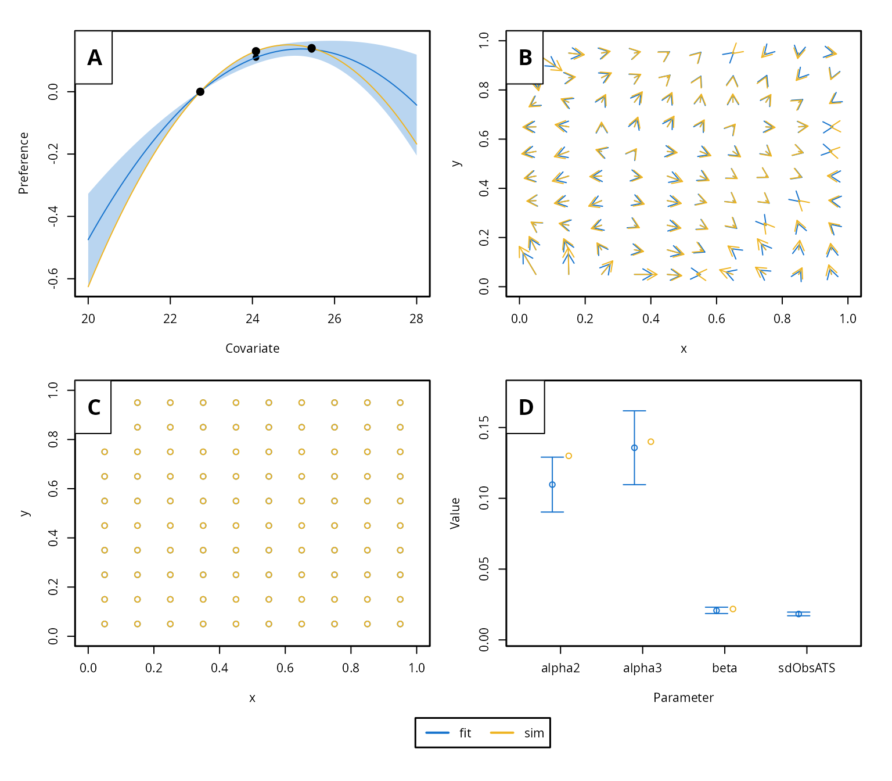

The goal of the movement model momo is to offer a fast and flexible model and R package that allows estimating habitat preferences and fine-scale movement patterns based on tagging data. To get started, make sure to install the most recent package version from GitHub.
Installation
The current version of momo (v0.0.1) requires R \(>= 4.0.0\) and can be downloaded from github as follows.
# install.packages("remotes")
remotes::install_github("tokami/momo")The development version can be installed with:
remotes::install_github("tokami/momo", ref = "dev")Basic usage
After successful installation, the package can be loaded into the R environment.
A data set containing all required information can quickly be created
by the function sim.momo:
The main function to estimate movement paramters is
fit.momo:
#> Building the model, that can take a few minutes.
#> Model built (0.66min). Minimizing neg. loglik.
#> 0: 2040.7811: 0.00000 0.00000 -4.60517 -4.60517
#> 1: -3958.2184: 0.134768 0.0784963 -4.21435 -3.69801
#> 2: -4394.1899: 0.145189 0.108319 -4.19797 -3.46092
#> 3: -4568.8670: 0.154734 0.139031 -4.20776 -3.22354
#> 4: -4581.9356: 0.209635 0.0854202 -4.40137 -3.10478
#> 5: -4598.5780: 0.194024 0.127696 -4.40719 -3.11522
#> 6: -4602.6505: 0.171190 0.160692 -4.42585 -3.12989
#> 7: -4605.3023: 0.174264 0.135774 -4.46450 -3.12286
#> 8: -4607.0883: 0.163610 0.151826 -4.50616 -3.11467
#> 9: -4607.8753: 0.161538 0.133854 -4.53531 -3.14623
#> 10: -4608.6757: 0.174395 0.148252 -4.57178 -3.12453
#> 11: -4608.9788: 0.162360 0.145236 -4.57152 -3.12963
#> 12: -4609.0007: 0.162483 0.143173 -4.57146 -3.12938
#> 13: -4609.0043: 0.160492 0.143560 -4.57128 -3.12894
#> 14: -4609.0085: 0.160770 0.142432 -4.57124 -3.12890
#> 15: -4609.0094: 0.160459 0.142695 -4.57124 -3.12871
#> 16: -4609.0095: 0.160230 0.142362 -4.57113 -3.12887
#> 17: -4609.0096: 0.160141 0.142593 -4.57097 -3.12897
#> 18: -4609.0097: 0.160163 0.142505 -4.57075 -3.12878
#> 19: -4609.0097: 0.160119 0.142489 -4.57072 -3.12890
#> 20: -4609.0097: 0.160160 0.142471 -4.57059 -3.12887
#> 21: -4609.0097: 0.160131 0.142514 -4.57059 -3.12887
#> 22: -4609.0097: 0.160144 0.142496 -4.57054 -3.12888
#> 23: -4609.0097: 0.160128 0.142486 -4.57054 -3.12888
#> 24: -4609.0097: 0.160128 0.142486 -4.57054 -3.12888
#> Minimization done (0.015min). Model converged. Estimating uncertainty.The package includes a variety of functions that allows to inspect the results:

This example illustrates the basic workflow: prepare data (here based on simulation), fit the model, and access results. For real applications, momo supports multiple types of tagging data, customizable environmental covariates, and both estimation and prediction features.
A more realistic scenario
In a more realistic scenario, the tagging data and environmental fields are not simulated but derived from actual observations, requiring additional data processing before fitting momo. The tutorial vignette provides a step-by-step guide to applying momo to simulated data that closely mimics real-world observations of skipjack tuna in the Eastern Pacific Ocean. It illustrates the expected data formats and demonstrates how momo functions can be used to prepare and structure observational datasets for model fitting.